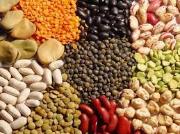

| Tipo de alimento | Ejemplos | Imagen |
|---|---|---|
| Frutas | Manzana, naranja, pera, piña, kiwi. | |
| Verduras | Zanahoria, papa, cebolla, chayote. | |
| Cereales | Arroz, maíz, trigo, avena. | |
| Leguminosas | Frijoles, ejote, garvbanzo, chicharos. |  |
| Origen animal | Carne, huevos, pescado, mariscos. | |
| Leche y sus derivados | Leche, queso, crema, yogurt, mantequilla. |  |